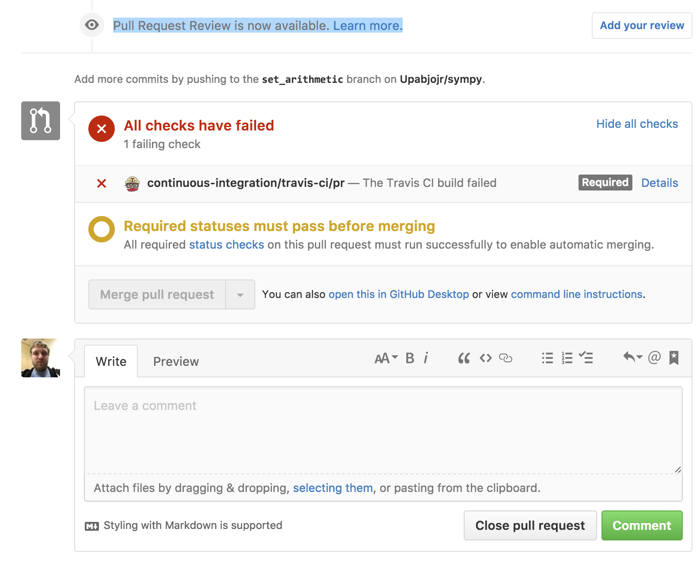
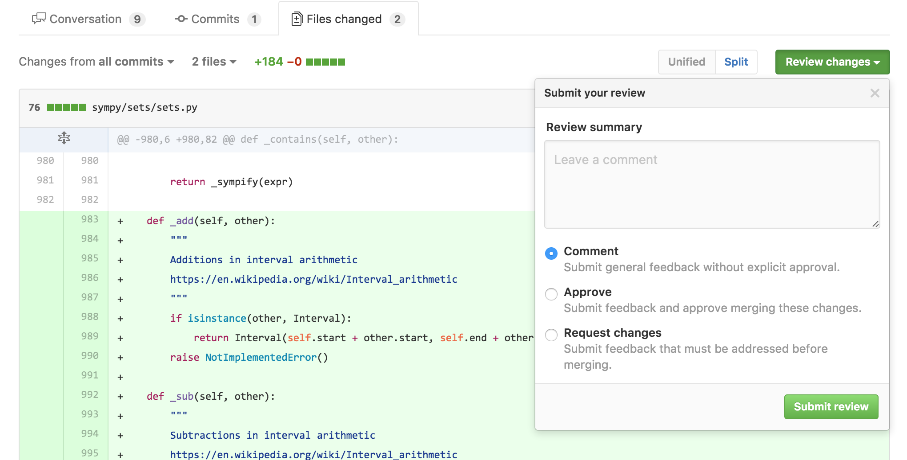

GitHub Reviews Gripes
GitHub recently rolled out a new feature on their pull requests called "Reviews". The feature is (in theory), something that I've been asking for. However, it really falls short in a big way, and I wanted to write down my gripes with it, in the hopes that it spurs someone at GitHub to fix it.
If you don't know, GitHub has had, for some time, a feature called "pull requests" ("PRs"), which lets you quite nicely show the diff and commit differences between two branches before merging them. People can comment on pull requests, or on individual lines in the diff. Once an administrator feels that the pull request is "ready", they can click a button and have the branch automatically merged.
The concept seems super simple in retrospect, but this feature completely revolutionized open source software development. It really is the bread and butter of GitHub. I would argue that this one single feature has made GitHub the (the) primary hosting site for open source software.
Aside from being an awesome idea, GitHub's trademark with pull requests, along with their other features, has been absolute simplicity in implementation. GitHub Reviews marks, by my estimation, the first major feature released by GitHub that completely and utterly lacks in this execution of simplicity.
Let's look at what Reviews is. When the feature first came out, I had a hard time figuring out how it even worked (the poor release date docs didn't help here either).
Basically, at the bottom of a pull request, you now see this

Clicking the "Add your review" button takes you to the diff page (first gripe: why does it move you to the diff page?), and opens this dialog

"OK", you might think, "this is simple enough. A review is just a special comment box where I can approve or reject a pull request." (This is basically the feature that I've been wanting, the ability to approve or reject pull requests.) And if you thought that, you'd be wrong.
The simplest way I can describe a review, having played with it, is that it is a distinct method of commenting on pull requests and on lines of diffs of pull requests. Distinct, that is, from the methods that already exist in the GitHub pull requests feature. That's right. There are now two ways to comment on a pull request (or on a line in a pull request). There's the old way, which involves typing text into the box at the bottom of the main pull request page (or on a line, and then pressing "Add a single comment"), and the new way, which involves clicking a special button at the top of the diff view (and the diff view only) (or by clicking a line in the diff and clicking "Start a review").
How do these two ways of the extremely simple task of commenting differ from one another? Two ways. One, with the old way, when you comment on a PR (or line), the comment is made immediately. It's saved instantly to the GitHub database, and a notification email is sent to everyone subscribed to the PR. With the new way, the comment is not made immediately. Instead, you start a "review", which postpones all comments from being published until you scroll to the top and press a button ("Review changes"). Did you forget to scroll to the top and press that button? Oh well, your comments never got sent to anyone.
Now, I've been told by some people that delayed commenting is a feature that they like. I can see how fewer total emails could be nice. But if you just want a way to delay comments, why do you need distinct commenting UIs? Couldn't the same thing be achieved via a user setting (I highly suspect that any given person will either like or dislike delayed commenting universally)? Or with a checkbox next to the comment button, like "delay notifications for this comment"? You can probably guess by now which of the two commenting systems I prefer. But guess what happens when I press the "Cmd-Enter" keyboard shortcut that's been hard-wired into my brain to submit a comment? I'll give you a hint: the result does not make me happy.
The second distinction between normal, old-fashioned commenting and the new-fangled reviews system is that when you finalize a review, you can elect to "approve" or "reject" the pull request. This approval or rejection gets set as a special status on the pull request. This status, for me personally, is the only feature here that I've been wanting. It turns out, however, that it's completely broken, and useless.
Here's my problem. We have, at the time of writing, 382 open pull requests in SymPy. A lot of these are old, and need to be triaged. But the problem from my point of view is the new ones. When I look through the list of pull requests, I want to be able to know, at a glance, which ones are "reviewable". For me, this means two things
The tests pass.
No other reviewer (myself included) has already requested changes, which still need to be made by the PR author.
Point 1 is really easy to see. In the pull request list, there is a nice green checkmark if Travis passed and a red X if it failed.

The second point is a disaster. Unfortunately, there's no simple way to do this. You might suggest adding a special label, like "Needs changes", to pull requests that have been reviewed. The problem with this is that the label won't go away when the changes have been made. And to worsen things, people who don't have push access (in the list above, only two PR authors have push access, and one of them is me), cannot add or remove labels on pull requests.
Another thing that has been suggested to me is an external "review" service that sets a status for a review. The problem with this (aside from the fact that I couldn't find one that actually did the very simple thing that I wanted), is that you now have to teach all your pull request reviewers to use this service. You might as well forget about it.
Having a first-class way in GitHub for reviewers to say "I approve these changes" or "I don't approve these changes" would be a huge boon, because then everyone would use it.
So great right, this new Reviews feature is exactly what you want, you say. You can now approve or reject pull requests.
Well no, because GitHub managed to overengineer this feature to the point of making it useless. This completely simple feature. All they had to do was extend the status UI and add a simple "I approve/I reject" button. If they did that, it would have worked perfectly.
Here are the problems. First, the pull request list has no indication of review status. Guess which pull requests in the above screenshot have reviews (and which are positive and which are negative). You can't tell (for example, the last one in the list has a negative review). If they were actually treated like statuses, like the UI suggests that they would, you would at least see an X on the ones that have negative reviews (positive reviews I'm much less worried about; most people who review PRs have merge access, so if they like the PR they can just merge it). I would suggest to GitHub to add, next to the status checkbox, a picture of everyone who's made a review on the PR, with a green checkmark or red X to indicate the type of review. Also, add buttons (buttons, not just buried advanced search options) to filter by reviews.
OK, so that's a minor UI annoyance, but it gets worse. Next on the docket, you can't review your own pull requests. It's not allowed for some reason.

Now why would you want to review your own pull request, you might ask? Aren't you always going to "approve" your own PR? Well, first off, no. There is such a thing as a WIP PR. The author setting a negative review on his own PR would be a great way to indicate WIP status (especially given the way reviews work, see my next gripe). Secondly, the "author" of a pull request is just the person who clicked the "New pull request" button. That's not necessarily the only person who has changes in the pull request. Thanks to the magic of how git works, it's quite easy to have a pull request with commits from many people. Multiple people pushing to a shared branch, with a matching pull request for discussion (and easy viewing of new commits and diff) is a valid and useful workflow (it's the only one I know of that works for writing collaborative prose). For the SymPy paper, I wanted to use GitHub Reviews to sign off on a common branch, but since I'm the one who started the pull request, I couldn't do it.
Next gripe, and this, I want to stress, makes the whole feature completely useless for my needs: reviews do not reset when new commits are pushed. Now, I just outlined above two use-cases where you might want to do a review that doesn't reset (marking WIP, and marking approval, although the second is debatable), but both of those can easily be done by other means, like editing the title of the PR, or old-fashioned commenting. The whole point of Reviews (especially negative reviews), you'd think, would be to indicate to people that the pull request, as it currently stands, needs new changes. A negative review is like failing your "human" test suite.
But unlike your automated test suite, which reset and get a new go every time you push a change (because hey, who knows, maybe the change ACTUALLY FIXED THE ISSUE), reviews do not reset, unless the original reviewers explicitly change them. So my dream of being able to glance at the pull request list and see which PRs need changes has officially been piped. Even if the list actually showed what PRs have been reviewed, it would be a lie, because as soon as the PR author pushes a change, the review status becomes potentially outdated.
Now, given the rocky start that this whole feature has had, I figured that this was probably just a simple bug. But after I reported it to GitHub, they've informed me that this is in fact intended behavior.
To make things worse, GitHub has another feature with Reviews, called required reviews. You can make it so that every pull request must receive at least one positive review and zero negative reviews before it can be merged (go to the branch settings for your repository). This works similar to required status checks, which make it so that your tests must pass before a PR can be merged. In practice, this means you need zero negative reviews, since anyone with push access could just do a positive review before merging (although annoyingly, you have to actually manually do it; IMHO, just requiring zero negative reviews should be sufficient, since merging is implicitly a positive review).
Now, you can see that the above "feature" of reviews not resetting breaks the whole thing. If someone negative reviews a PR, that one person has to go in and change their review before it can be merged. And even if the author pushes new changes to fix the issues outlined in the review, the PR cannot be merged until the reviewer resets it. So this actually makes the reviewing situation worse, because now anyone who reviews a pull request at any point in time has to go through with it all the way to the merge. I can't go to a PR that someone requested changes for, which were later made by the author, and merge it. I have to ping the reviewer and get them to change their review first. Needless to say, we do not have this feature enabled for SymPy's repo.
I think I maybe see the intended use-case here. You want to make it so that people's reviews are not forgotten or ignored. But that's completely foreign to my own problems. I trust the SymPy community, and the people who have push access to do due diligence before merging a pull request. And if a bad change gets in, we can revert it. Maybe this feature matters more for projects that continuously deploy. Likely most of the code internal at GitHub works like that. But guess what GitHub, most of the code on GitHub does not work like that. You need to rethink this feature to support more than just your use-cases.
I think starting simple, say, just a simple "approve/reject" button on each PR, which just adds an icon, and that's it, would have been a better approach. Then they could have listened to the feedback on what sorts of things people wanted it to be able to do (like setting a status, or showing up in the search list, or "delayed commenting" if that's really what people want). This is how GitHub used to do things. It's frustrating to see a feature implemented that doesn't (yet) do quite what you want, but it's even more frustrating to see a feature implemented that does all the things that you don't want.
Summary
Yes, I'm a little mad here. I hope you enjoyed my rant. Here are what I see as the problems with the "Reviews" feature. I don't know how to fix these problems (I'm not a UI/UX guy. GitHub supposedly hires them, though).
There are now two distinct ways to comment on a PR (delayed and non-delayed). There should be one (say, with a checkbox to delay commenting).
If you insist on keeping delayed commenting, let me turn it off by default (default = the Cmd-Enter keyboard shortcut).
The reviews button is buried on the diff page. I would put it under the main PR comment box, and just reuse the same comment box.
Reviews should show up in the pull request list. They should be filterable with a nice UI.
Let me review my own pull requests. These can be excluded from required reviews (that makes sense to me). Beyond that, there's no reason this shouldn't be allowed.
Don't require a positive review for required reviews, only zero negative reviews. Merging a PR is implicitly positively reviewing it.
Allow reviews to reset when new commits are pushed.
I get that the last point may not be what everyone wants. But GitHub needs to think about UI, and defaults here. Right now, the UI looks like reviews are like statuses, but they actually aren't because of this.
I am dispirited to see GitHub release such a broken feature, but even the best trip up sometimes. I'm not yet calling "doom" on GitHub. Everyone has their hockey puck mice. I'm actually hopeful that they can fix these issues, and implement a feature that makes real headway into helping me solve one of my biggest problems on GitHub right now, the reviewing of pull requests.